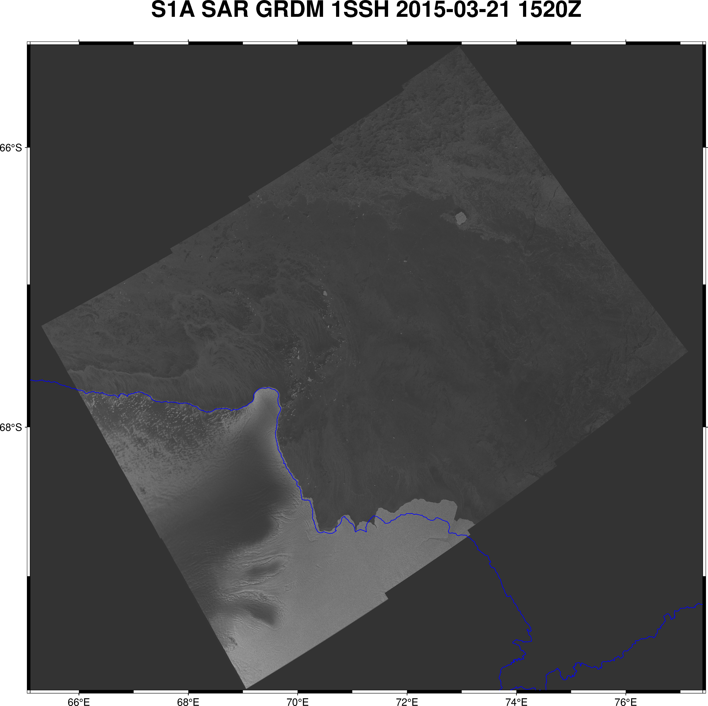
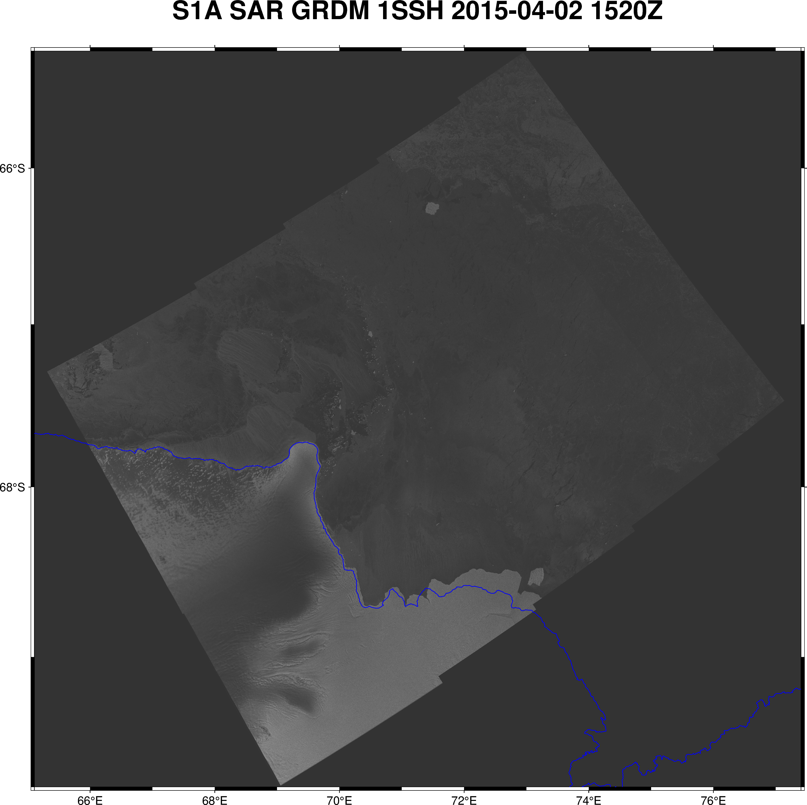

Cape Darnley (high resolution)

Mawson Coast (high resolution)

Prydz Bay (lower resolution)

It is understood that grounded icebergs act as a focal point for fast ice to anchor cite:zotero://select/items/1_6DH4IZVS and hence act as potential stabilisation platform and buttressing for polynya formation . It is therefore important to understand the seasonal distribution of icebergs. It may be only a distribution that is needed and not exact map locations with iceberg shapes (volumes) and orientations. So that a model is not dynamically applying a grounded iceberg field but using the statistical knowledge of their distribution as an initial condition. The logic of this is based on model resolution and treating icebergs as islands. Another factor is that the underlying bathymetry on which icebergs ground is not changing on the same timescale as the ice-ocean-atmosphere and hence a seasonal approximation of locations will be valid over decadal scales. However, as the temporal scale shifts to centuries and millennia this approach will no longer be valid. The concentration of this work is considering temporal scales less than a century and hence the effort here is to work on the statistical distribution as method to gain a more robust methodology (dynamical) on future iterations of this work.
Sentinel-1/2 SAR is great at discriminating between icebergs and sea ice. Sentinel-1 gives us sufficient resolution to see iceberg shapes down to the scale that is required of AFIM, which gives the potential for us to unequivocally state which bergs are truly grounded.
Topographically sea ice
Examine sequential temporal Sentinel-1/2 images and determine which icebergs are not moving. These could be mapped and form the prescribed field of grounded bergs for AFIM or they could form the basis on which to determine a seasonal distribution. In beginning this effort the simplest approach and one that will give me a better understanding of the remote sensing technology and one aspect of the sea ice dynamics is to utilised NOAA's Coastwatch Polygon Search. Look through pairs of images. Each pair is separated by 12-days which provides nearly exact geographic domain and aspect angle of incident Sentinel SAR images. When using NOAA's Coastwatch website it allows for one to open up several tabs of sequential (12-day images) and 'flick' between them to see the ocean-sea ice dynamics. In this manner I can select a pair of images to then trace the common grounded icebergs. This should end with a grounded iceberg occupying at least one pixel.
After reviewing a number of images from NOAA's Coastwatch webpage, I decided to make a year's animation from the NOAA processed SAR data that are comprised of 28 images for each region that I called: Cape Darnley, Mawson Coast and Prydz Bay. The animations are displad in-line with the text below and indicate a number of probable grounded icebergs in each region.
Cape Darnley (high resolution)
Mawson Coast (high resolution)
Prydz Bay (lower resolution)
My first go at choosing a pair of high and low resolution images for Cape Darnley and Prydz Bay did provide any usual info on grounded icebergs as the fast ice that year did not melt. The same was true for 2021 and 2022 as well as 2019 and 2018. However, 2017, 2016 and 2015 were fast ice breakout years. Unfortunately, NOAA's Coastwatch Polygon Search came up empty for those years. Even expanding the search area did generate any hits on that website.
image 1
image 2


image 1
image 2
As I ran into delays with python method I chose to download the data from RDI/CDASO. The delay with the python method was that the online archive was not making the data available at 24 or 48 or 72 hours after the initial request.
I've opted to use ~/.netrc file to store my sensitive login information
One must create a GeoJSON file and edit this code to work on that file
For this particular instance (example) I'm using ~/PHD/etc/Mawson.geojson
#LIBRARY IMPORT
import os
import pprint
from sentinelsat import SentinelAPI, read_geojson, geojson_to_wkt
# HARDWIRED PARAMETERS -- need a better way of putting a passocde in here
Dbase = os.path.join('/','Users','dpath2o')
Ddata = os.path.join(Dbase,'DATA','Satellite','Sentinel','MawsonCoast')
Fgeoj = os.path.join(Dbase,'PHD','etc','Mawson.geojson')
# The geojson file makes this a bit transferable and easier to setup different regions
# later on, but it requires that sentinalsat can use and we use to functions from the
# sentinelsat API
ftprt = geojson_to_wkt(read_geojson(Fgeoj))
# Hi-Res IMAGE 1 -- using a narrow
qkwar = {'platformname': 'Sentinel-1',
'producttype': 'GRD',
'date': ('2019-02-19T15:40:00.000Z','2019-02-19T15:50:00.000Z' ),
'instrumentshortname': 'SAR-C SAR',
'sensoroperationalmode': 'EW'}
apic = SentinelAPI(None, None, 'https://scihub.copernicus.eu/dhus')
Qresults = apic.query(ftprt,**qkwar)
Qdf = apic.to_dataframe(Qresults)
for f in Qresults:
print('Filename {}'.format(Qdf.title[f]))
online_test = apic.get_product_odata(f)
if not online_test['Online']:
print('{} is NOT online ... skipping'.format(Qdf.title[f]))
continue
apic.download(f,Ddata)
# Hi-Res IMAGE 2 -- only changing the datetime to 12 days later as this will give us the exact
# same image
qkwar = {'platformname': 'Sentinel-1',
'producttype': 'GRD',
'date': ('2019-03-15T15:40:00.000Z','2019-03-15T15:50:00.000Z' ),
'instrumentshortname': 'SAR-C SAR',
'sensoroperationalmode': 'EW'}
apic = SentinelAPI(None, None, 'https://scihub.copernicus.eu/dhus')
Qresults = apic.query(ftprt,**qkwar)
Qdf = apic.to_dataframe(Qresults)
for f in Qresults:
print('Filename {}'.format(Qdf.title[f]))
online_test = apic.get_product_odata(f)
if not online_test['Online']:
print('{} is NOT online ... skipping'.format(Qdf.title[f]))
continue
apic.download(f,Ddata)
# Low-Res IMAGE 1 -- using a narrow
qkwar = {'platformname': 'Sentinel-1',
'producttype': 'GRD',
'date': ('2019-02-26T15:30:00.000Z','2019-02-26T15:40:00.000Z' ),
'instrumentshortname': 'SAR-C SAR',
'sensoroperationalmode': 'EW'}
apic = SentinelAPI(None, None, 'https://scihub.copernicus.eu/dhus')
Qresults = apic.query(ftprt,**qkwar)
Qdf = apic.to_dataframe(Qresults)
for f in Qresults:
print('Filename {}'.format(Qdf.title[f]))
online_test = apic.get_product_odata(f)
if not online_test['Online']:
print('{} is NOT online ... skipping'.format(Qdf.title[f]))
continue
apic.download(f,Ddata)
# Low-Res IMAGE 2 -- only changing the datetime to 12 days later as this will give us the exact
# same image
qkwar = {'platformname': 'Sentinel-1',
'producttype': 'GRD',
'date': ('2019-03-10T15:30:00.000Z','2019-03-10T15:40:00.000Z' ),
'instrumentshortname': 'SAR-C SAR',
'sensoroperationalmode': 'EW'}
apic = SentinelAPI(None, None, 'https://scihub.copernicus.eu/dhus')
Qresults = apic.query(ftprt,**qkwar)
Qdf = apic.to_dataframe(Qresults)
for f in Qresults:
print('Filename {}'.format(Qdf.title[f]))
online_test = apic.get_product_odata(f)
if not online_test['Online']:
print('{} is NOT online ... skipping'.format(Qdf.title[f]))
continue
apic.download(f,Ddata)This method requires access to the above link the repository can be
found in /cdaso/PRIVATE/sentinel1/SAR_L1_GRD/. Using
rsync -aP
[RDI_CDASO] [LOCAL_DIRECTORY] can be used to download the
files
Initially, I avoided this method,
Sentinel Level 1 SAR Data is not provided in a geo-referenced projection and hence to manually analyse the data with respect to grounded icebergs it is necessary to re-project (map) the data. As geotiffs can be vectorised (i.e. each pixel can be accessed for information) and geographical/mapping information travels with the file (header/metadata) then this is the obvious file format to rasterise the SAR Level 1 data. There are number of ways to do this and some toolboxes that could be explored for future automation.
One method via python is provided below as wellas another method, the one that I used to rasterise the four separate SAR Level 1 sweeps, via Sentinal SNAP toolbox.
I did some background reading on SAR and the Amery Ice Shelf calving event of 2019 — the later being something I observed while looking through NOAA Coastwatch images. On Monday, after SentinelHub still had not released the products, I decided to go through our previous email discussion in August of last year. I found that Glenn had given me access to RDSI/CDASO, which I had completely forgot about. By that stage on Monday I had identified these three domains (hi-res CD, hi-res MC, low-res PB) and took the liberty to download the corresponding data from RDSI/CDASO. By then it was Tuesday and I had a crack at processing a pair of images using the code provided here. However, after several attempts and variations I only get a blank (black) image as a result, albeit a 1.5GB blank image. As I wanted to have a better understanding of the tif (data) I found this little chestnut , as well as these two bodies of work: ASF and GMTSAR. The later describe working with raw interferometry SAR (InSAR) sentinel-1 and an example of Larsen Ice Shelf (which is a link at the bottom of that page, but be warned the download is 4GB).
import rasterio
import xarray as xr
import rioxarray
import pygmt
import os
# First image
F1 = os.path.join('/','Users','dpath2o','DATA','Satellite','Sentinel','CapeDarnley','EW','2015',
'S1A_EW_GRDM_1SSH_20150321T152013_20150321T152101_005131_006765_4867.SAFE',
'measurement',
's1a-ew-grd-hh-20150321t152013-20150321t152101-005131-006765-001.tiff')
ras1 = rasterio.open(F1)
gcps1,ras_crs1 = ras1.get_gcps()
da1 = xr.open_rasterio(F1)
ds1 = da1.to_dataset('band')
ds1 = ds1.rename({1:'sar'})
destination1 = ds1.sar.values
dest1,trans1 = rasterio.warp.reproject(ras1.read(1),
destination1,
gcps=gcps1,
src_crs=ras_crs1,
dst_crs=ras_crs1)
dn1 = xr.DataArray(dest1, dims=['y','x'])
dn1 = dn1.rio.write_crs(ras_crs1)
dn1 = dn1.rio.write_transform(trans1)
dn1 = dn1.assign_coords( x=(trans1*(dn1.x,dn1.y[0]))[0],
y=(trans1*(dn1.x[0],dn1.y))[1] )
dn1 = dn1.astype(float)
region = [dn1.x.min().values,dn1.x.max().values,dn1.y.min().values,dn1.y.max().values]
fig = pygmt.Figure()
fig.basemap( region=region , projection="M10i" , frame=["af",'+t"S1A SAR GRDM 1SSH 2015-03-21 1520Z"'] )
pygmt.makecpt( cmap="gray" , series=(0,dn1.max().values,1) )
fig.grdimage( dn1 , cmap=True , transparency=20 )
fig.coast(shorelines=".5p,blue")
fig.savefig(os.path.join('/','Users','dpath2o','PHD','GRAPHICAL','grounded_icebergs','unmerged_tiffs',
'S1A_EW_GRDM_1SSH_20150321T152013_20150321T152101_005131_006765_4867_EC.png'))
# Second image
F2 = os.path.join('/','Users','dpath2o','DATA','Satellite','Sentinel','CapeDarnley','EW','2015',
'S1A_EW_GRDM_1SSH_20150402T152013_20150402T152101_005306_006B78_0527.SAFE',
'measurement',
's1a-ew-grd-hh-20150402t152013-20150402t152101-005306-006b78-001.tiff')
ras2 = rasterio.open(F2)
gcps2,ras_crs2 = ras2.get_gcps()
da2 = xr.open_rasterio(F2)
ds2 = da2.to_dataset('band')
ds2 = ds2.rename({1:'sar'})
destination2 = ds2.sar.values
dest2,trans2 = rasterio.warp.reproject(ras2.read(1),
destination2,
gcps=gcps2,
src_crs=ras_crs2,
dst_crs=ras_crs2)
dn2 = xr.DataArray(dest2, dims=['y','x'])
dn2 = dn2.rio.write_crs(ras_crs2)
dn2 = dn2.rio.write_transform(trans2)
dn2 = dn2.assign_coords( x=(trans2*(dn2.x,dn2.y[0]))[0],
y=(trans2*(dn2.x[0],dn2.y))[1] )
dn2 = dn2.astype(float)
region = [dn2.x.min().values,dn2.x.max().values,dn2.y.min().values,dn2.y.max().values]
fig = pygmt.Figure()
fig.basemap( region=region , projection="M10i" , frame=["af",'+t"S1A SAR GRDM 1SSH 2015-04-02 1520Z"'] )
pygmt.makecpt( cmap="gray" , series=(0,dn2.max().values,1) )
fig.grdimage( dn2 , cmap=True , transparency=20 )
fig.coast(shorelines=".5p,blue")
fig.savefig(os.path.join('/','Users','dpath2o','PHD','GRAPHICAL','grounded_icebergs','unmerged_tiffs',
'S1A_EW_GRDM_1SSH_20150402T152013_20150402T152101_005306_006B78_0527.png'))
# Differenced-image
tmp2 = dn2.isel(x=slice(0,10360),y=slice(0,8145))
tmp1 = dn1.isel(x=slice(0,10360),y=slice(0,8145))
dd = xr.DataArray(tmp2.values-tmp1.values, dims=['y','x'])
dd = dd.assign_coords(y=tmp2.y.values,x=tmp2.x.values)
fig = pygmt.Figure()
fig.basemap( region=region , projection="M10i" , frame=["af",'+t"S1A Difference (2105-04-02T1520Z - 2015-03-21T1520Z)"'] )
pygmt.makecpt( cmap="gray" , series=(0,dd.max().values,1) )
fig.grdimage( dd , cmap=True , transparency=20 )
fig.coast(shorelines=".5p,blue")
fig.savefig(os.path.join('/','Users','dpath2o','PHD','GRAPHICAL','grounded_icebergs',
'CapeDarnley_S1A_EW_GRDM_1SSH_20150402_diff_20150321.png'))This image was created by taking the difference of S1A EW GRDM 20150321T1520 and S1A EW GRDM 20150402T1520.
{kind=link}
{kind=link}